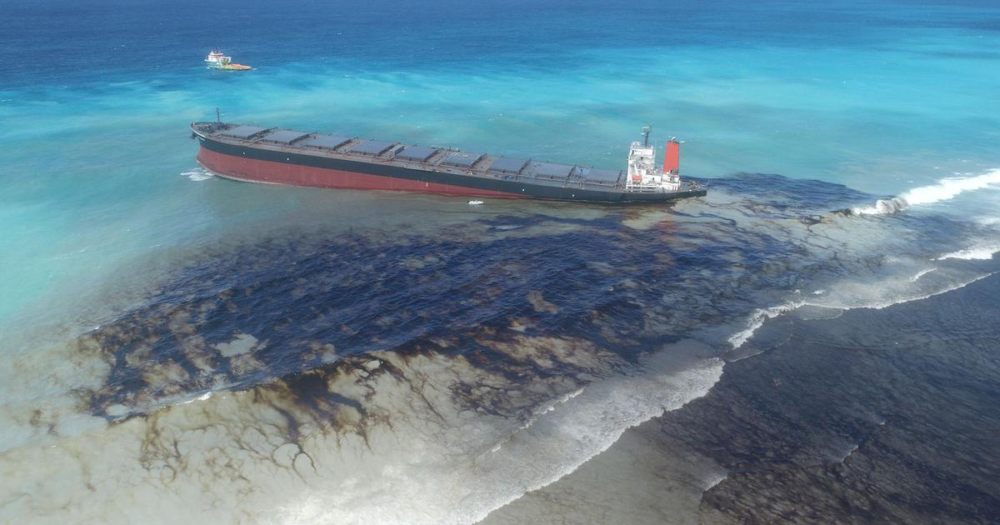

Water Pollution

Marine plastic debris is a global problem that is threatening marine biodiversity. Different marine organisms have been exposed to the lethal and sub-lethal effects of this problem. Sub-lethal effects include reduced fitness due to reduced feeding, reduced reproductive output, limb amputation, and exposure to diseases and toxic materials, while lethal effects include drowning, gastro-intestinal blockage, and stomach rupture. Marine turtles are very vulnerable to these effects since these organisms actively ingest plastic mistaking it as prey.
Deforestation
The loss of trees and other vegetation can cause climate change, desertification, soil erosion, fewer crops, flooding, increased greenhouse gases in the atmosphere, and a host of problems for indigenous people.
Oil Spill
 The effects of oil spills are worse when the site is near coastal communities. Shorelines are typically teeming with species that flourish on the water's surface, including birds, sea otters, fish, and invertebrates. When a massive amount of oil is spilled into these areas, it harms the health of marine life. Oil spills also impact local industry; the fishing, shipping, and tourism industries often suffer economic losses after oil spills.
Air Pollution

The toxic gases that factories release into the air, combined with those added by automobiles on the road, mean that we have an increased risk of developing chronic respiratory disease, lung cancer, heart disease and many other illnesses, diseases and conditions.
Forest Fire
Forest fires leave ashes behind. They erode the soil and destroy the balance in its nutrients. As a result, there’s an increased risk of landslides and flooding. Wildfires contribute towards increased levels of carbon dioxide in the atmosphere. This makes the greenhouse effect stronger, and it speeds up the climate change.
Mining

Effects on biodiversity. When mining, extensive areas of land and vegetation are cleared. The viability of the land for farming activities deteriorate and animals loss their habitats.